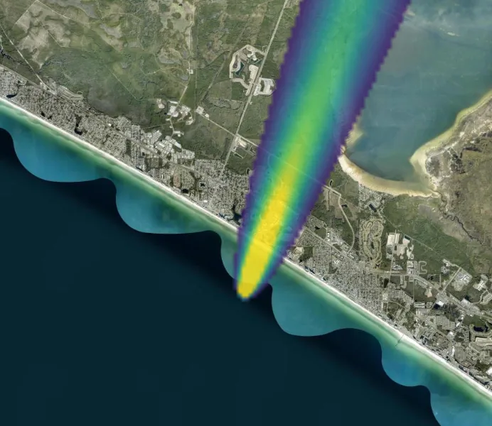

Same epoch. Different sky.
Both frames are epoch 39 in two worlds that share every byte of history to epoch 20 and nothing after it.
Baseline — wind 20°

Backed wind — −10°

Left, the baseline track runs inland to the north-northeast. Right, the branch after the wind backs 30°: the same source, the same history, a plume that leans almost due north and misses everything the baseline crossed. The only difference between these two frames is one number, changed once, 19 epochs earlier.
✓
All three declared constants are fork knobs in the form
observed
windDirDeg + sourceRate + windSpeed fields presentexpected3 fields✓
Six worlds off one anchor: baseline plus five sibling forks, every one anchored at epoch 20
observed
5 forks created — wind −10°, 320°, 50°, 80°, source 10×expectedwind-shift + 3-fan + 10×-rate, all siblings of timeline 0✓
The recording’s own rows say fan, not chain: every fork is a child of timeline 0 at the same anchor
observed
t1←0@20 t2←0@20 t3←0@20 t4←0@20 t5←0@20expectedall ←0@20✓
The 10× wedge equals the closed form — conservation as the divergence oracle
observed
measured 1367.998 vs closed form 1368.000 @ shared epoch 39expectedequal to 1%✓
The wind-shift what-if is the receptor’s whole story: the backed wind carries the plume away
observed
baseline 1.713e-1 vs backed-wind 5.694e-6 at epoch 39expectedshifted < 25% of baseline